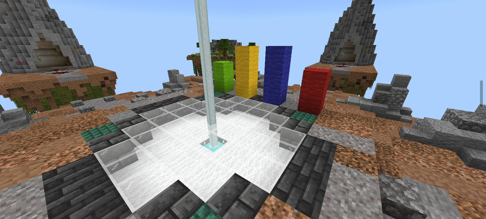
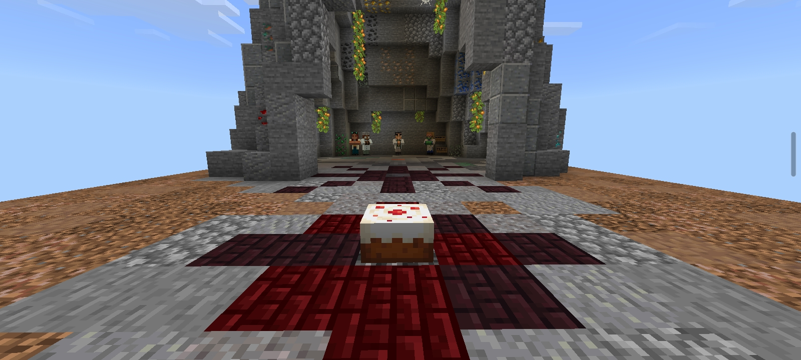
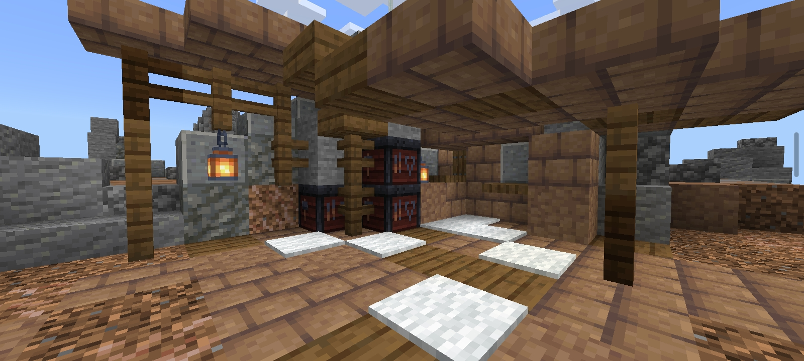
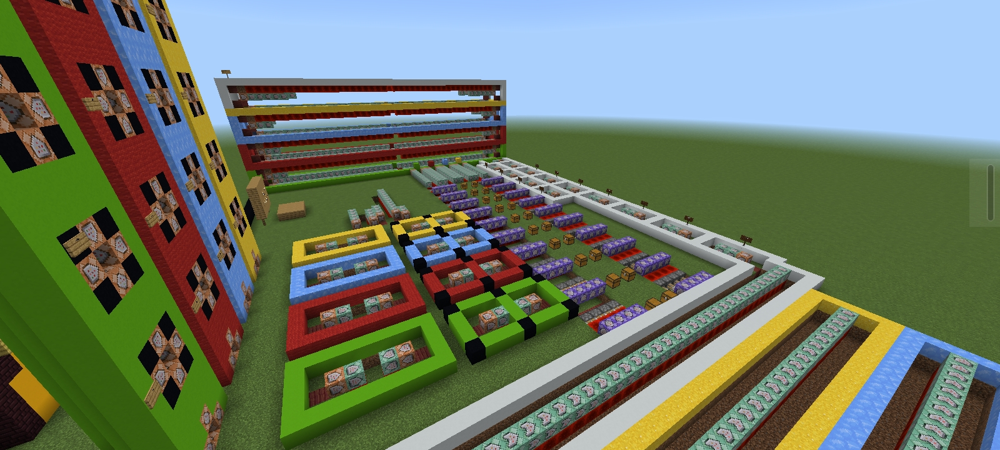
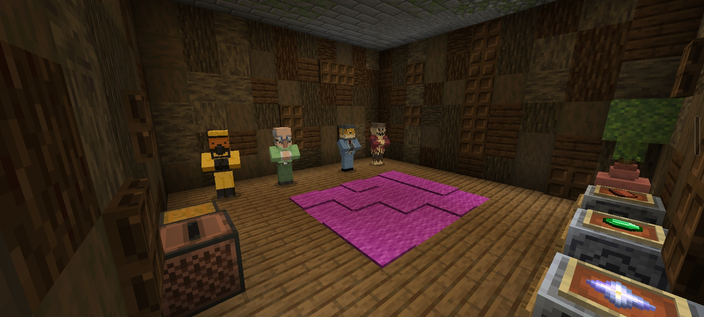
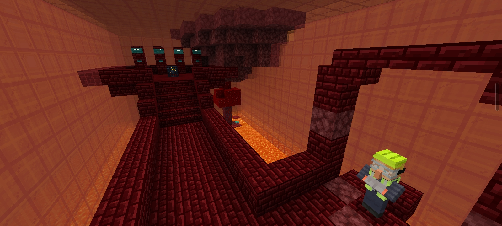
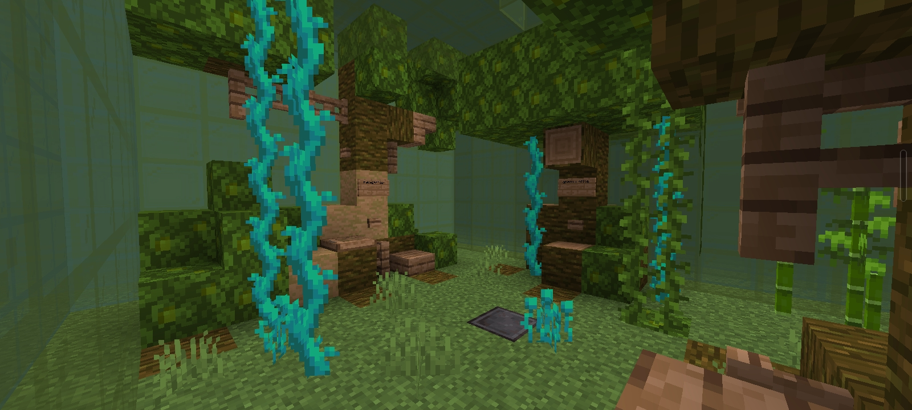
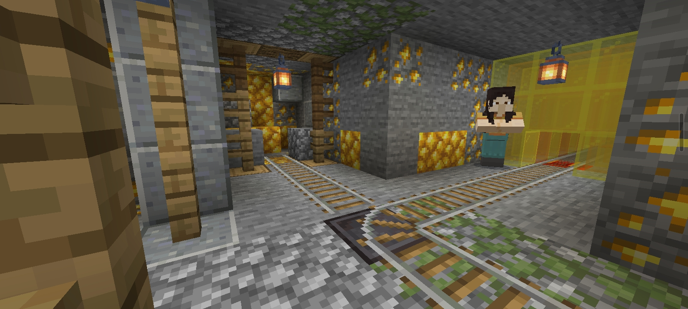
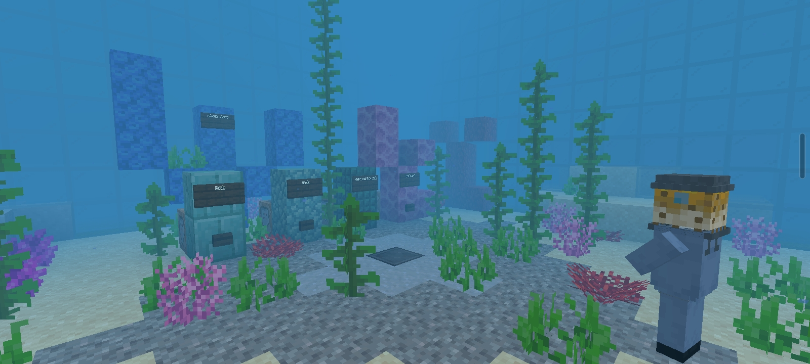

Ever missed cakewars since the unfortunate extreme debt the mineplex server hosts were in? Fear no more, 2 idiots have begun a journey to get cakewars up and running. Filled with almost all the mechanics of the original, plus extras to make it our own, we started this project to finally fill the void that no cakewars provides.
~Overview~
This project is close to finishing, as of May 2024, and there is plans for multiple extra updates including kits, new decor, islands and more. There are no current plans for other maps, as the way it's programmed makes it a bit of a nightmare. We aimed to make it as faithful as possible, yet we're spelling it as "Caikwars" because why not. This project is just for fun, has no money behind it and exists purely because we felt like it.
Below is a gallery of images to give you an idea of the map. There is 4 seperate team islands (colour coded), 4 diagonally joining emerald generators and one centre middle island. The theme is:
~Dwarven Kingdom~
Fig.1: Emerald generator. Cave centerpiece and a grassy field outside, crops littered about. Fig.2: Middle Island. Generates nether stars for team upgrades such as protection. See all 4 team colours here.Fig.3: Team Island. Notice 4 vendors: Blocks, Bricks, Emeralds and Nether Stars.
~Kits & Future~
Kits is an update planned for 1.1 or later, 4 different types styled after the originals. They give slight buffs to the player when the game is begun, if kits are enabled all players will be able to select one. That is: Builder, Fighter, Tank and Ranger. Their detailed descriptions will be below:
Builder: Begins with a stack of wool. Tends to an agressive playstyle to take generators early, or just a simple quick cake defense.
Fighter: Begins with and upgraded sword. Aimed for those with a strong combat sense to take the advantage in battle.
Tank: Begins with chainmail armour. Perfect for a team who needs a base defender to do better work than wool can.
Ranger: Start with a bow and arrows. This will be give you options for tactical protection, control of bridges and some sneaky snipe shots.
??? Even more in the future! send suggestions via email.
~Extras~
Below is a small image library of assorted other mentions to show all we have to offer, scroll through if you are interested. Click the arrows to browse through.

Fig.4: The black market npc area. Will sell rare resources that can't be got from shops.

Fig.5: H E L P. This isn't all of it either.

Fig.6: Starting room. Choose teams, toggle settings and discuss with teammates.

Fig.7: Red team room. Styled like a destroyed nether fortress.

Fig.8: Green team room. Jungle styled room with nether accents.

Fig.9: Yellow team room. Gold mine, complete with a minecart.

Fig.10: Blue team room. Underwater themed, various coral decor.
~Contact~
Download: (Email if desperate for a world copy, currently unfinished)